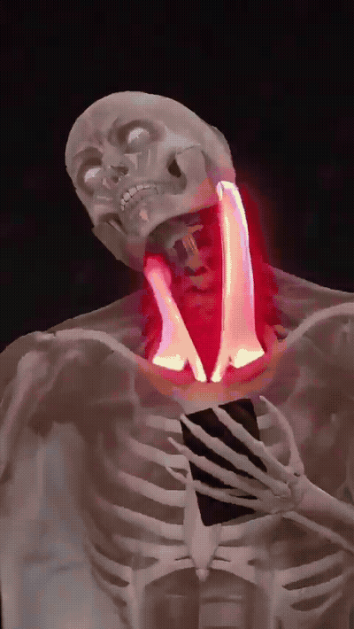
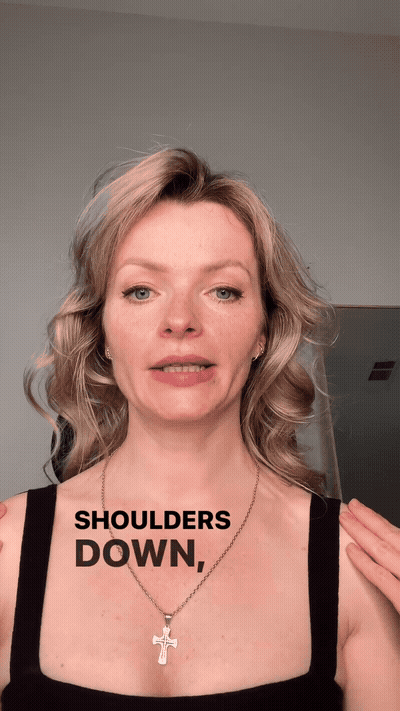
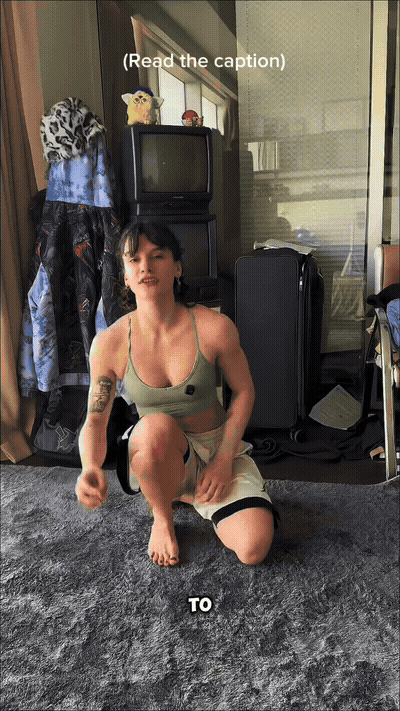
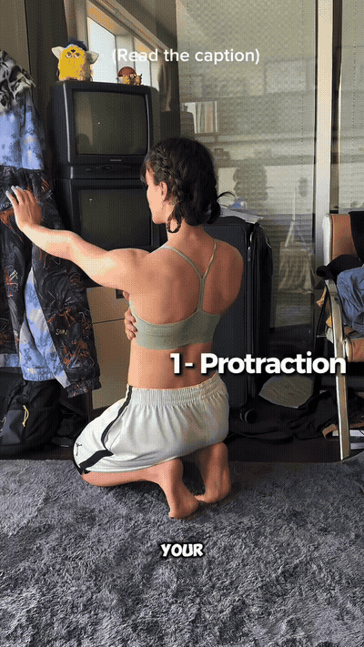
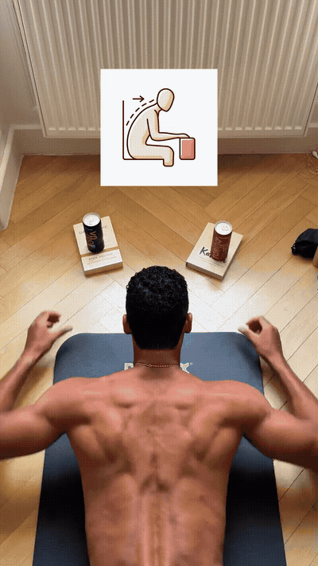
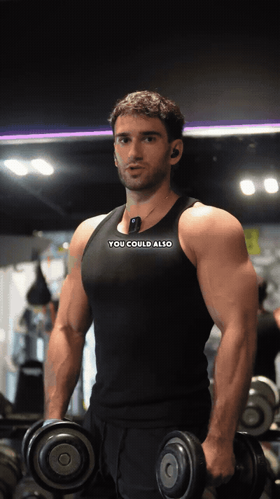
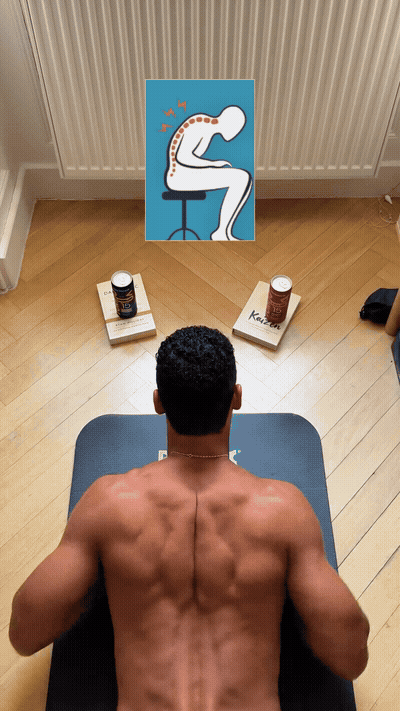
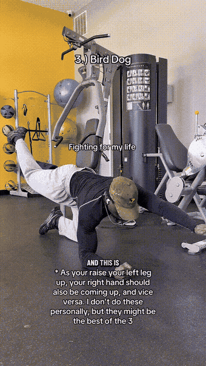
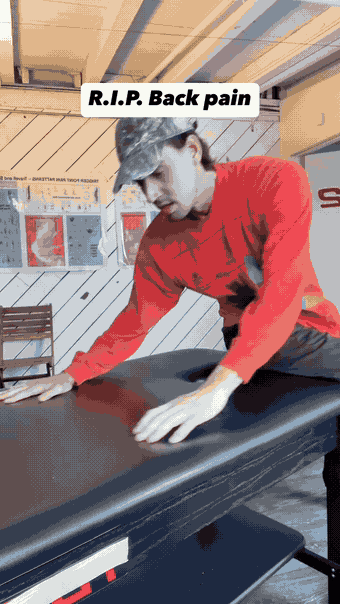
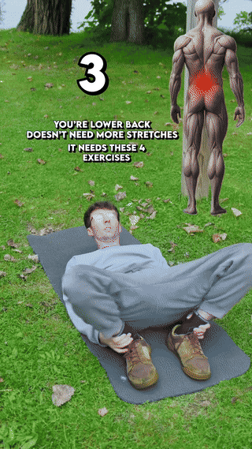

approximately 6–10s


approximately 10–14s

Quadruped opposite arm/leg raise. Trains the QL and deep core to hold the pelvis level while the limbs move — the anti-rotation half of the equation.

Sit on the edge of a table (or bed), reach the upper body over the far side, then lift the trailing back leg 10–15×. Stretches the lats while strengthening the glute medius — the muscle that carries the pelvis so the QL doesn't have to.

Same ankle-grip bridge with a wider foot position. Shifts emphasis toward the inner glutes and deep hip rotators.